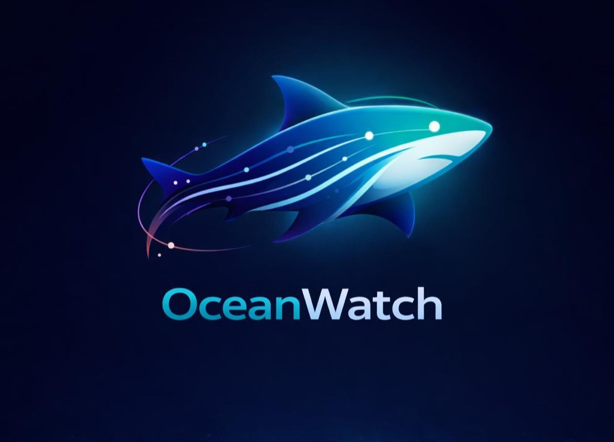

OceanWatch is the digital citizen-science layer for Mar Sustentable's work preserving coral reefs, mangroves, and sharks across Cozumel, Holbox, and Isla Mujeres. Every sighting is verified on-chain and flows directly into conservation decisions.

Mar Sustentable generates interdisciplinary data on coastal exploitation and socioecological systems — coral reefs, mangroves, and other critical habitats — to understand how ecosystem services are delivered to at-risk coastal communities.
OceanWatch is the tool that puts that science in the hands of the divers, fishers, and guides who live on the water every day. Observations are pinned to IPFS, anchored on Hedera, and made available to policy managers making the decisions that protect natural capital and coastal heritage.
The backbone of Caribbean marine life. Baseline sightings and condition reports feed long-term reef health monitoring.
Nurseries for juvenile sharks and countless reef species. Protected where data shows they matter most.
Reef sharks, nurse sharks, and juveniles — the indicator species for reef ecosystem health across the Mexican Caribbean.
Mar Sustentable's shark research on Cozumel builds on the Local Ecological Knowledge of fishers who have watched these waters for generations. OceanWatch digitizes that knowledge — with provenance, with proof, and without losing a single observation.
A fisher in Holbox or a diver off Cozumel files a sighting: species, location, photo. Evidence is pinned to IPFS — immutable, decentralized, forever referenceable.
Each observation is anchored to Hedera Consensus Service. Every reporter is a unique human, proven with World ID — no bots, no duplicates, no fabricated data.
Donors support Mar Sustentable's field biologists directly on-chain. Every contribution is traceable from wallet to programme, with zero overhead in between.
OceanWatch is built to feed the science and education programmes Mar Sustentable is already running.
Reconstructing historical shark biodiversity through fishers' Local Ecological Knowledge, historical ecology, and geospatial field observations. Focused on juvenile reef sharks and nurse sharks across Holbox (since 2015), Isla Mujeres (since 2021), and Cozumel.
Virtual shark conservation workshops for young people across 10+ countries in Latin America and the Caribbean. Launched in 2021 and supported by the Save Our Seas Foundation, with 150+ short educational films produced since 2018.
Mar Sustentable produces sound scientific and environmental education material used by policy managers to preserve the natural capital and socio-cultural heritage of coastal communities. Their field biologists, educators, and local partners are the people OceanWatch is built for.
This isn't a hackathon thought experiment. It is a working tool designed alongside the scientists who will use it.
Visit marsustentable.org"Fishers have watched these reefs for generations. OceanWatch turns that knowledge into a dataset we can act on — and that policy makers can trust."
Open the app, verify you're human, and file your first sighting — or fund Mar Sustentable directly on-chain.